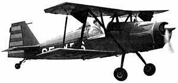

Photo by Richard Riding
Your times have been accepted, and will be posted soon.
remember to email a picture of your model to thayer@gryffinaero.com.
Again, photographs can be mailed in for me to scan, but I will not be able to return them without a SASE.
Surely you have a friend with a scanner...
Copyright 1998, Thayer Syme. All rights reserved